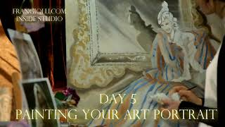
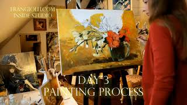
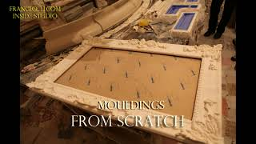

| Elite home decoration by Studio Frangiolli. Each sq inch of this house was hand painted by artists. Oil paints on canvas mounted on walls is technology that was used prior to patterned wallpapering. |
|  | 8 days in 6 minutes. Time lapse video: |
|  | 6 days in 6 minutes. Time lapse video of reproducing masterpiece by van Gogh: |
|  | Unique classic framing for your painting - hand painted art frames that reflect colors and subject of the painting. The frame can contain also your thoughts about the painting, matching poetry or your motto. This is the traditional way in which European paintings of XVII-XIX centuries were framed. Say, if you want to present a portrait to a doctor, we can make the frame that is painted with general medicine symbols or other person’s specific items. |